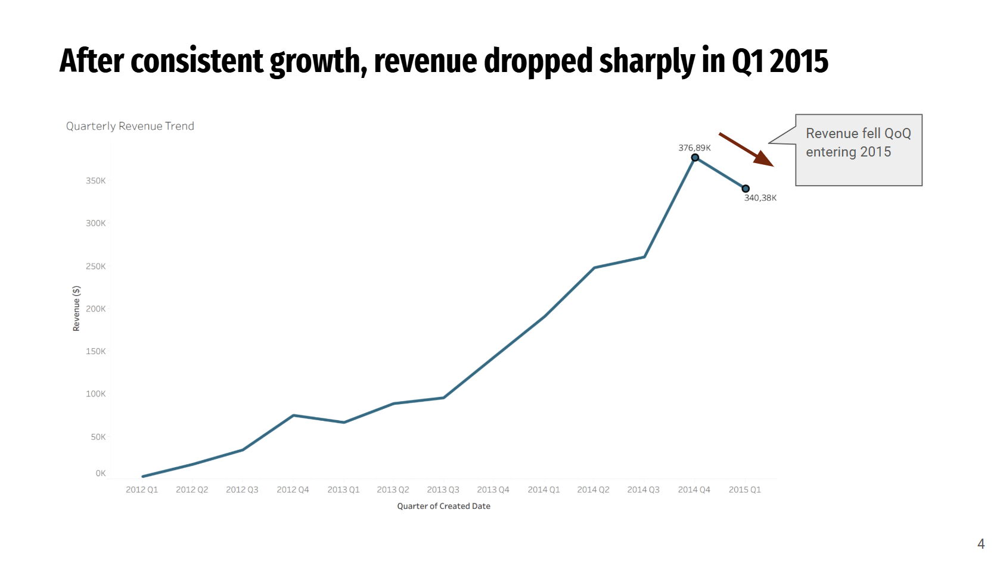
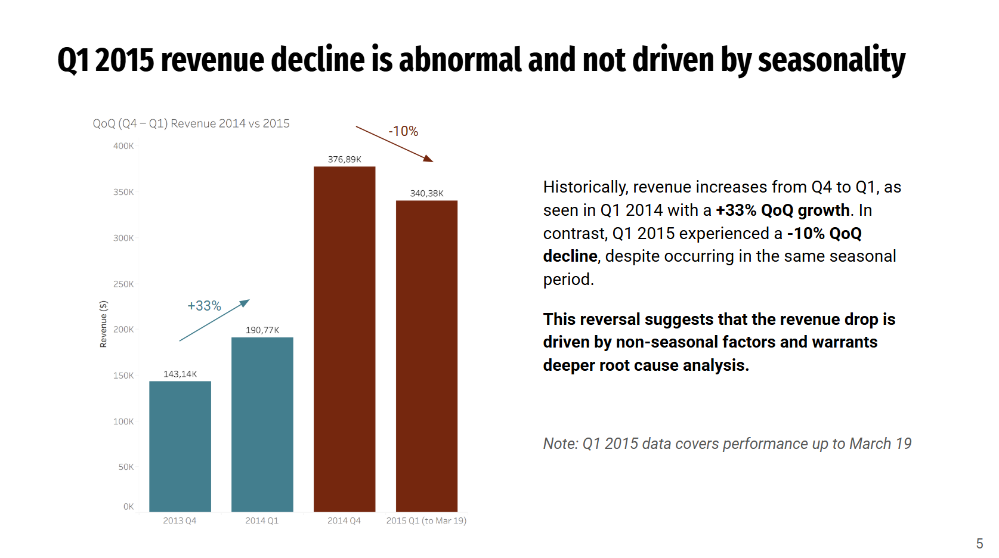
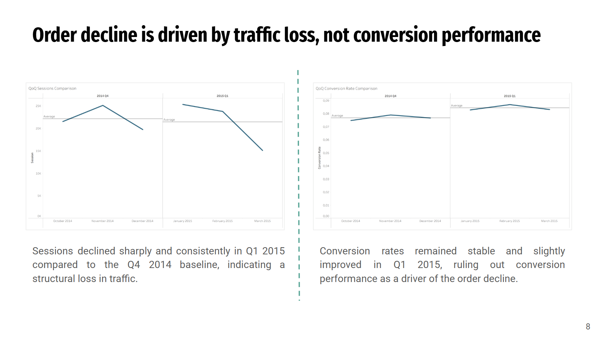
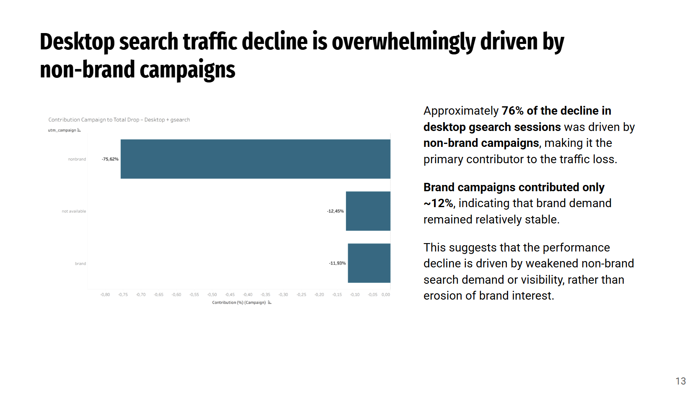

Disclaimer: This project is part of RevoU Data Insight Project, a 4-week case study analyzing real-world business datasets.
Maven Fuzzy Factory, an e-commerce business, faced a sharp revenue drop in Q1 2015 after consistent growth. This project performs a root cause analysis to determine why revenue fell by 10% quarter-over-quarter.